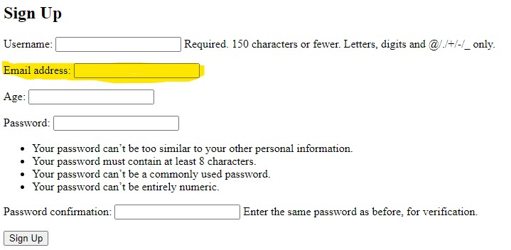

Set UP
set up a virtual environment in python & activate it
- create a virtual environment:
python -m venv .venv.venv
- the dot
.hides the folder venvis the name of the folder- it is convention to name the folder
.venv
- the dot
- activate the virtual environment on the terminal:
.venv\Scripts\Activate
NOTE: windows may requirer setting an execution policy
- create a virtual environment:
python -m venv .venv
and set execution policy with the command :Set-ExecutionPolicy -ExecutionPolicy RemoteSigned -Scope CurrentUser - activate the virtual environment:
.venv\Scripts\Activate.ps1
- create a virtual environment:
- deactivate the virtual environment on the terminal:
deactivate - add the hidden folder of the virtual environment (.venv/ *) to the .gitignore file
- create a requirements.txt file which contains the record of the required packages:
pip freeze > requirements.txt
(the command needs to be repeated after new packages have been added)
install Django & create a project
- install Django:
python -m pip install django - create a Django project:
django-admin startproject django_project .django_project .
django_projectis the name of the Django project, can be any name but don't use hyphen.the dot is optional, but it tells Django to create the project in the current directory and not to create a folder with the same name first
project folder structure
├── django_project *
│ ├── __init__.py *
│ ├── asgi.py *
│ ├── settings.py *
│ ├── urls.py *
│ └── wsgi.py *
├── manage.py *
└── .venv/ *
create an app & register it in project/settings.py
Django uses the concept of projects and apps to keep code clean and readable. A single top-level Django project can contain multiple apps. Each app controls an isolated piece of functionality.
- create a new app:
python manage.py startapp APP_NAME
app file structure
├─ pages *
│ ├─ __init__.py *
│ ├─ admin.py *
│ ├─ apps.py *
│ ├─ migrations *
│ │ └─ __init__.py *
│ ├─ models.py *
│ ├─ tests.py *
│ └─ views.py *
- NOTE: every app needs to be registered otherwise Django does not know about it,
add following code:
'app_name.apps.App_nameConfig'
to the INSTALLED_APPS = [] list in the PROJECT_FOLDER/settings.py
command explanation with example
"pages.apps.PagesConfig"- pages is the name of the app in this example
- the apps.py file and its content is generated by Django when the app is
created
from django.apps import AppConfig class PagesConfig(AppConfig): default_auto_field = 'django.db.models.BigAutoField' name = 'pages'
pages
tells Django to "walk" into the 'pages' package (folder).apps
"walk" into the file 'apps.py'PagesConfig
call the function
how to run Django's local web server
- start Django's local web server on port 8000 with the command "runserver" which is located in
"manage.py"
python manage.py runserver
change port
- append the port number to the command, e.g.: port 9000
python manage.py runserver 9000
warning messages
- warnings about 18 "unapplied migrations" appear because the initial database has not jet been "migrated"
- to migrate exit the local server
Ctrl + cand run the command:python manage.py migrate - Django has now created a SQLite database and migrated its built-in apps. This is represented by the new file db.sqlite3 which was created in our directory.
- append the port number to the command, e.g.: port 9000
- click the link in the terminal output or follow the link http://127.0.0.1:8000/
- stop the local server with the terminal short cut
Ctrl + c
HTTP Request/Response Cycle
Every time you visit a webpage an initial “request” is sent by the “client” and a “response” is sent back by a “server”. What a web framework like Django does is accept HTTP requests to a given URL and returns a HTTP response containing the information necessary to render a webpage.
Django's MVT pattern
- Model: Manages data and core business logic
- View: Describes which data is sent to the user but not its presentation
- Template: Presents the data as HTML with optional CSS, JavaScript, and Static Assets
- URL Configuration: Regular-expression components configured to a View
Django's MVT pattern:
- When you type in a URL, Django checks if (in project/urls.py) it finds a matching URL pattern.
- The URL pattern is linked to a single view (contained in views.py) which combines the data from the model (stored in models.py) and the styling from a template (any file ending in .html).
- The view then returns a HTTP response to the user.
HTTP Request > URL > View > Model & Template > HTTP Response
example of an "HTTP Request/Response Cycle"
In Django, four separate files aligning with this MVT pattern are required to power one single dynamic (aka linked to a database) webpage:
- urls.py
- views.py
- models.py
- template.html (any HTML file will do)
However, to create a static webpage (not linked to a database) we can hardcode the data into a view so the model is not needed.
The following steppes show what happen's when the user enters an request in the url. The yellow highlighted code mark's the code which need to be added or has additional explanation.
- user adds a "slug"*
to the url address
for example: /hello - Django look always first in the
PROJECT_NAME/urls.pyfor the matching path inurlpatterns = []
example: updated the project/urls.py with the yellow marked code
#...PROJECT_NAME/urls.py
from django.contrib import admin
from django.urls import path, include
urlpatterns = [
path('admin/', admin.site.urls),
path('hello/', include('pages.urls'))
] - the search is redirected to the apps
urls.pyto match the rest of the requested 'url' with the path inurlpatterns = []
NOTE: urls.py needs to be manually created in the 'apps' directory
example: create the file pages/urls.py with the following code
#...pages/urls.py
from django.urls import path
from .views import homePageView
urlpatterns = [
path('', homePageView, name ='home'),
]
- the 'homePageView' function (FBVs) is called from the apps
views.pyfile
example: updated the pages/views.py with the yellow marked code
# pages/views.py
from django.http import HttpResponse
def homePageView(request):
return HttpResponse("Hello, World!")
- a page with the string "Hello, World!" is returned to the user


connecting the apps "views" (TemplateView)
connecting the apps "views" (class-based generic views)
The built in generic TemplateView can be used to display a template files on a homepage.
- in "PROJECT_NAME/urls.py", add the "url path" to the urlpattern
#...PROJECT_NAME/urls.py
from django.contrib import admin
from django.urls import path, include
urlpatterns = [
path('admin/', admin.site.urls),
path('', include('pages.urls'))
] - create the "urls.py" file in the app
#...pages/urls.py
from django.urls import path
from .views import HomePageView, AboutPageView
urlpatterns = [
path("about/", AboutPageView.as_view(), name='about'),
path('', HomePageView.as_view(), name ='home'),
]- when using Class-Based Views, you always add as_view() to the end of the view name
- write the logic for the "views" into the app's views.py
# pages/views.py
from django.views.generic import TemplateView
class HomePageView(TemplateView):
template_name = "home.html"
class AboutPageView(TemplateView):
template_name = "about.html"the built-in TemplateView
- it is a class-based generic views
- Note that we've capitalized our view, HomePageView, since it's now a Python class. Classes, unlike functions, should always be capitalized.
- The TemplateView already contains all the logic needed to display our template, we just need to specify the template's name.
connecting the templates
Templates are individual HTML files that can be linked together and also include basic logic.
where to place templates
django's default template structure
By default, Django's template loader will look within each app for related templates. However the structure is somewhat confusing: each app needs a new templates directory, another directory with the same name as the app, and then the template file.
└─ pages *
├─ templates *
├─ pages *
├─ home.html *
one level template file structure
- create a folder called "templates" in the root directory, in which you will save your HTML
files
mkdir templates - update "django_project/settings.py" to tell Django the location of our new templates
directory.
# django_project/settings.py
TEMPLATES = [
{
...
"DIRS": [BASE_DIR / "templates"],
...
},
]
├─ django_project *
├─ pages *
├─ templates *
├─ home.html *
extending templates
Content that is repeated on every page (header, footer, ...) can be inherited by all other templates. This is achieved with the help of Django's templating language.
adding links with Django's templating language
- create the base template (from which other templates will inherit) which is called
"base.html" by convention and save it in the "templates" folder
├─ pages
├─ templates
├─ base.html *
├─ home.html
- add following code to the the base.html:
# ... templates/base.html
<header>
<a href="{% url 'home' %}">Home</a> |
<a href="{% url 'about' %}">About</a>
</header>
{% block content %}
{% endblock content %}- Template tags take the form of {% something %} where the “something” is the template tag itself.
- full list of built-in template tags here in the official docs
- To add URL links in our project we can use the built-in url template tag which takes the URL pattern name as an argument. (link to official "url tag" docs)
- Blocks can be overwritten by child templates via inheritance. While it's optional to name our closing endblock (you could just write {% endblock %}) doing so helps with readability, especially in larger template files.
- update the 'child template' with the extend method (link to official extend doc)
# ... templates/home.html
{% extends "base.html" %}
{% block content %}
<h1>Homepage</h1>
{% endblock content %}- the {% extends "..." %} block/method connects the 'child template' to the 'parent template'
- every element is taken from the 'parent' except the part with the {% block content %} which is replaced with the 'child's' {% block content %} content
tests
It's important to add automated tests and run them whenever a codebase changes. Tests require a small amount of upfront time to write but more than pay off later on.
testing
there are two types of tests ...
- Unit tests:
check a piece of functionality in isolation- run faster and are easier to maintain since they focus on only a small piece of code
- Integration tests:
check multiple pieces linked together- are slower and harder to maintain since a failure doesn't point you in the specific direction of the cause
- Most developers focus on writing many unit tests and a small amount of integration tests.
- Django's own testing framework provides several extensions on top of Python's unittest.
Django tests ...
- test client for making dummy Web browser requests,
- a number of Django-specific additional assertions,
-
Django has four test case classes: ...
- SimpleTestCase: (official doc)
is used when a database is not necessary - TestCase: (official doc)
is used when you do want to test the database - TransactionTestCase: (official doc)
useful if you need to directly test database transactions - LiveServerTestCase: (official doc)
launches a live server thread useful for testing with browser-based tools like "Selenium"
naming of methods in unittest and django.test
The naming of methods in unittest and django.test are written in camelCase rather than the more Pythonic snake_case pattern. The reason is that unittest is based on the jUnit testing framework from Java, which does use camelCase, so when unittest was added to Python it came along with camelCase naming.
Tests are written in the apps test.py and executed in the terminal.
python manage.py test - SimpleTestCase: (official doc)
testing with 'SimpleTestCase'
Generally it is a good idea to abide by the concept of DRY (Don't Repeat Yourself) coding, but unit tests work best when they are self contained and extremely verbose.
test to check if HTTP status codes of 200 is returned
- write the test in the apps test.py
# pages/tests.py
from django.test import SimpleTestCase
class HomepageTests(SimpleTestCase):
def test_url_exists_at_correct_location(self):
response = self.client.get("/")
self.assertEqual(response.status_code, 200)
class AboutpageTests(SimpleTestCase):
def test_url_exists_at_correct_location(self):
response = self.client.get("/about/")
self.assertEqual(response.status_code, 200)
test if the 'url name' matches the 'url path'
- Django utility function reverse can be used for testing
# pages/tests.py
from django.urls import reverse
class HomepageTests(SimpleTestCase):
def test_url_available_by_name(self):
response = self.client.get(reverse("home"))
self.assertEqual(response.status_code, 200)
class AboutpageTests(SimpleTestCase):
def test_url_available_by_name(self):
response = self.client.get(reverse("about"))
self.assertEqual(response.status_code, 200)
correct templates and that they display the expected content
- We can use assertTemplateUsed and assertContains to achieve this.
# pages/tests.py
from django.test import SimpleTestCase
from django.urls import reverse
class HomepageTests(SimpleTestCase):
def test_template_name_correct(self):
response = self.client.get(reverse("home"))
self.assertTemplateUsed(response, "home.html")
def test_template_content(self):
response = self.client.get(reverse("home"))
self.assertContains(response, "<h1>Homepage</h1>")
class AboutpageTests(SimpleTestCase):
def test_template_name_correct(self):
response = self.client.get(reverse("about"))
self.assertTemplateUsed(response, "about.html")
def test_template_content(self):
response = self.client.get(reverse("about"))
self.assertContains(response, "<h1>About page</h1>")
testing with 'TestCase' on databases
TestCase, let us create a test database we can check against. In other words, we don't need to run tests on our actual database but instead can make a separate test database, fill it with sample data, and then test against it which is a much safer and more performant approach.
setUpTestData()
To create our test data We will use the hook setUpTestData(). It is much faster than using the setUp() hook from Python's unittest because it creates the test data only once per test case rather than per test.
- All test methods must start with the phrase test* so that Django knows to test them!
- The test is run against the database model
posts/ model.py / Post
# ... posts/models.py
from django.db import models
class Post(models.Model):
text = models.TextField()
- add following code to the app's / tests.py :
# ... posts/tests.py
from django.test import TestCase
from .models import Post
class PostTests(TestCase):
@classmethod
def setUpTestData(cls):
cls.post = Post.objects.create(text="This is a test!")
def test_model_content(self):
self.assertEqual(self.post.text, "This is a test!") - run the test in the terminal with the command:
python manage.py test
test out put on the terminal:passed test
Found 1 test(s).
Creating test database for alias 'default'...
System check identified no issues (0 silenced).
.
--------------------------------------------------
Ran 1 test in 0.001s
OK
Destroying test database for alias 'default'...failed test output
the last line of the test was changed
self.assertEqual(self.post.text, "This is a tes!")Found 1 test(s).
Creating test database for alias 'default'...
System check identified no issues (0 silenced).
F
=====
=================================================================
FAIL: test_model_content (post.tests.PostTests)
----------------------------------------------------------------------
Traceback (most recent call last):
File "C:\Users\zolta\Desktop\Coding Projects\messageBoard\post\tests.py", line 14, in
test_model_content
self.assertEqual(self.post.text, "This is a tes!")
AssertionError: 'This is a test!' != 'This is a tes!'
- This is a test!
? -
+ This is a tes!
----------------------------------------------------------------------
Ran 1 test in 0.001s
FAILED (failures=1)
Destroying test database for alias 'default'...
adding more additional tests
Adding test's to check if the correct page has been returned and the correct is template used
additional tests, code
# ... posts/tests.py
from django.test import TestCase
from django.urls import reverse
from .models import Post
class PostTests(TestCase):
@classmethod
def setUpTestData(cls):
cls.post = Post.objects.create(text="This is a test!")
def test_model_content(self):
self.assertEqual(self.post.text, "This is a test!")
def test_url_exists_at_correct_location(self):
response = self.client.get("/")
self.assertEqual(response.status_code, 200)
def test_homepage(self):
response = self.client.get(reverse("home"))
self.assertEqual(response.status_code, 200)
self.assertTemplateUsed(response, "home.html")
self.assertContains(response, "This is a test!")
Local vs Production
To make our site available on the Internet where everyone can see it, we need to deploy our
code to an external server and database. This is called putting our code into production.
Django
comes with its own basic server, which is only suitable for local usage.
As web server we can use Gunicorn and as hosting
provider Heroku.
deployment checklist
- install Gunicorn
python -m pip install gunicorn - create a requirements.txt file
explanation
Create a requirements.txt file containing all the specific Python dependencies in our project. That is, every Python package currently installed in our virtual environment. This is necessary in case we (or a team member) want to recreate the repository from scratch in the future. It also helps Heroku recognize that this is a Python project, which simplifies the deployment steps.
python -m pip freeze > requirements.txt - update ALLOWED_HOSTS in django_project/settings.py
explain ALLOWED_HOSTS
The ALLOWED_HOSTS setting represents that host/domain names our Django site can serve. This is a security measure to prevent HTTP Host header attacks. Using the wildcard asterisk * allows all domains to be acceptable, which is an unsafe practice.
ALLOWED_HOSTS = [".herokuapp.com", "localhost", "127.0.0.1"] - create a file named "Procfile" with no extension in the root directory with following
code:
web: gunicorn django_project.wsgi --log-file -
(The Procfile is specific to Heroku and provides instructions on how to run the application in their stack.)- web: gunicorn
for the web function to use gunicorn as the server - django_project.wsgi
to use the WSGI config file located at django_project.wsgi - --log-file -
the flag --log-file - makes any logging messages visible to us
- web: gunicorn
- create a file named "runtime.txt" in the root directory and add which Python version should
run on Heroku (doc
'runtime.txt')
python-3.10.2- you can check the used python version with the command:
python --version
- you can check the used python version with the command:
deploying an app to Heroku over the cli
how to deploy to Heroku
- execute the "deployment checklist"
- deploy first to GitHub
- log into Heroku with the command:
heroku login
(a window opens in the browser for identification, follow the instructions) - create a Heroku app with the command:
heroku create
(Heroku will create a random name for our app, for example: murmuring-plateau-30548) - ignore static files (like CSS & JavaScript) for now
heroku config:set DISABLE_COLLECTSTATIC=1 - push the code to GitHub and to Heroku
git push heroku main - make the Heroku app "live"
heroku ps:scale web=1 - opens the "web browser" with the "life" version of our Heroku app
heroku open
Django's ORM (Object-Relational Mapper)
There is built-in support for multiple database backends: PostgreSQL, MySQL, MariaDB, Oracle, and SQLite. This means that we, as developers, can write the same Python code in a models.py file and it will automatically be translated into the correct SQL for each database. The only configuration required is to update the DATABASES section of our django_project/settings.py file.
creating a database
- execute the migrate command to create an initial database based on Django's default settings
python manage.py migrate
migrate
Migrate will sync the database with the current state of any database models contained in the project and listed in INSTALLED_APPS. In other words, to make sure the database reflects the current state of your project you'll need to run migrate (and also makemigrations) each time you update a model.
Create a Database Model
Django's ORM will automatically turn this model into a database table for us.
- Create a new database model in the models.py which is called Post and has the database field
text.
# ... posts/models.py
from django.db import models
class Post(models.Model):
text = models.TextField() - Django provides many model fields supporting common types of content such as characters, dates, integers, emails, and so on.
Activating models
After a new model is created, it need's to be also activate.
- Whenever we create or modify an existing model we will need to update Django in a two-step process:
- create a migrations file with the makemigrations command
python manage.py makemigrations DATABASE_NAME
- Migration files create a reference of any changes to the database models which means
we can track changes and debug errors as necessary over time.
migrations for all
Note that you don't have to include a name after makemigrations. If you simply run python manage.py makemigrations, a migrations file will be created for all available changes throughout the Django project. That is fine in a small project such as ours with only a single app, but most Django projects have more than one app! Therefore ,if you made model changes in multiple apps the resulting migrations file would include all those changes! This is not ideal. Migrations file should be as small and concise as possible as this makes it easier to debug in the future or even roll back changes as needed. Therefore, as a best practice, adopt the habit of always including the name of an app when executing the makemigrations command!
- Migration files create a reference of any changes to the database models which means
we can track changes and debug errors as necessary over time.
- we build the actual database with the migrate command which executes the instructions in our
migrations file.
python manage.py migrate
- create a migrations file with the makemigrations command
Django Admin
Django's admin interface provides a visual way to interact with data.
creating a 'super user'
To use the Django admin, we first need to create a superuser who can log in.
- execute the command below and respond to the prompts for a username, email, and password:
python manage.py createsuperuser- When you type your password, it will not appear visible in the command line console for security reasons.
- to open the admin in Django, run the local server and enter following address:
http://127.0.0.1:8000/admin/
register an app with admin
We must update an app's admin.py file for it to appear in the admin.
- updated the app's admin.py with the following code:
# ... posts/admin.py
from django.contrib import admin
from .models import Post
admin.site.register(Post)
labeling admin entry's
By default, admin entry's are labeled with 'object (1)', 'object (2)', ... .
- to label the admin entry with the first 50 character's of its text,
add the yellow marked code to the app's / models.py / class :
# ... posts/models.py
from django.db import models
class Post(models.Model):
text = models.TextField()
def __str__(self):
return self.text[:50]
Connecting The Apps "Views" (ListView)
The ListView is used to iterate through the list the contents of the database model. Each list item (database entry) can be used separately in the template.
Is based on the code in the model :
posts/ model.py / Post
# ... posts/models.py
from django.db import models
class Post(models.Model):
text = models.TextField()
- add following code to the app's / views.py :
# ... posts/views.py
from django.views.generic import ListView
from .models import Post
class HomePageView(ListView):
model = Post
template_name = "home.html" - create the template:
- make a folder called 'templates' in the root directory
- update the DIRS field in the django_project/settings.py file so that Django
knows to look in this new templates directory.
# ... django_project/settings.py
TEMPLATES = [
{
...
"DIRS": [BASE_DIR / "templates"],
...
},
] - create the HTML file in our example it is 'home.html' and add the following code:
# ... templates/home.html
<h1>Message board homepage</h1>
<ul>
{% for post in post_list %}
<li>{{ post.text }}</li>
{% endfor %}
</ul>
- ListView automatically returns to us a context variable called "MODEL_NAME_list", where MODEL_NAME is our model name, that we can loop over via the built in for template tag.
- We can create our own variable called post and can then access the desired field we want displayed, text, as post.text.
- connect the project and app urls:
- update the django_project / urls.py :
# ... django_project/urls.py
from django.contrib import admin
from django.urls import path, include
urlpatterns = [
path("admin/", admin.site.urls),
path("", include("posts.urls")),
] - create the app's / urls.py and add following code:
# ... posts/urls.py
from django.urls import path
from .views import HomePageView
urlpatterns = [
path("", HomePageView.as_view(), name="home"),
]
- update the django_project / urls.py :
Blog App
"Blog app" set up
- make a new directory for our project and move into it
- create and activate a virtual environment and name it venv
python -m venv .venv.\.venv\Scripts\activate - reate a new Django project called django_project
python -m pip install django - create a new app blog
python manage.py startapp blog - perform a migration to set up the database
python manage.py migrate - update django_project/settings.py
INSTALLED_APPS = [
...
'blog.apps.BlogConfig'
]
Database Models
In this example our blog application should have: title, author and body.
- enter following code in to the blog / models.py :
# blog/models.py
from django.db import models
from django.urls import reverse
class Post(models.Model):
title = models.CharField(max_length=200)
author = models.ForeignKey(
"auth.User",
on_delete=models.CASCADE,
)
body = models.TextField()
def __str__(self):
return self.title
def get_absolute_url(self):
return reverse("post_detail", kwargs={"pk": self.pk}) - run migrations with the command:
python manage.py makemigrations blog - migrate the changes to the database with the command:
python manage.py migrate
Admin
- create a super user with the command below and follow the prompt:
python manage.py createsuperuser - update blog/admin.py as follows:
# ... blog/admin.py
from django.contrib import admin
from .models import Post
admin.site.register(Post) - run the server and log into admin:
python manage.py runserver - create two new posts
If you try to enter a post without an author you will see an error.
URLs
- create a new file called urls.py within the blog app and update it with the code
below:
# ... blog/urls.py
from django.urls import path
from .views import BlogListView
urlpatterns = [
path("", BlogListView.as_view(), name="home"),
]
- update django_project/urls.py file so that it knows to forward all requests directly to the
blog app:
# ... django_project/urls.py
from django.contrib import admin
from django.urls import path, include
urlpatterns = [
path("admin/", admin.site.urls),
path("", include("blog.urls")),
]
Views (class-based views)
- add to blog / views.py the code below:
# ... blog/views.py
from django.views.generic import ListView
from .models import Post
class BlogListView(ListView):
model = Post
template_name = "home.html"
Templates
We will use a base.html file and a home.html file that inherits from it. When we add templates for creating and editing blog posts, they too can inherit from base.html.
- create a folder called 'templates' in the root directory
- update django_project/settings.py so Django knows to look there for our templates:
# django_project/settings.py
TEMPLATES = [
{
...
"DIRS": [BASE_DIR / "templates"],
...
},
] - within the templates folder create a file called base.html with following code:
# ... templates/base.html
<html>
<head>
<title>Django blog</title>
</head>
<body>
<header>
<h1><a href="{% url 'home' %}">Django blog</a></h1>
</header>
<div>
{% block content %}
{% endblock content %}
</div>
</body>
</html> - within the templates folder create a file called home.html with following code:
# ... templates/home.html
{% extends "base.html" %}
{% block content %}
{% for post in post_list %}
<div class="post-entry">
<h2><a href="">{{ post.title }}</a></h2>
<p>{{ post.body }}</p>
</div>
{% endfor %}
{% endblock content %}
- run the local server:
python manage.py runserver
the local server should look like this:
Static Files
CSS, JavaScript, and images are a core piece of any modern web application and within the Django world are referred to as “static files”. By default, Django will look within each app for a folder called static.
set the 'static' folder to the 'root directory'
- create a folder called 'static'' in the 'root directory'
mkdir static - we need to tell Django to look for this new folder when loading static files,
add the following code to the bottom of the django_project/settings.py file:
# ... django_project/settings.py
STATIC_URL = "/static/"
STATICFILES_DIRS = [BASE_DIR / "static"]
create and connect a css stylesheet to the template
- create inside the static folder, a css folder with a file called base.css:
ni static/css/base.css - add following code to the base.css:
# ... static/css/base.css
header h1 a {
color: red;
} - We need to add the static files to our templates by adding {% load static %} to the top of
base.html. Because our other templates inherit from base.html, we only have to add this once.
# ... templates/base.html
{% load static %}
<html>
<head>
<title>Django blog</title>
<link rel="stylesheet" href="{% static 'css/base.css' %}">
</head>
... - run the local server to check the output:
python manage.py runserver
the landing page should look like this:
import google font & improve style
- open the box and add the following code to templates/base.html :
base.html
# ... templates/base.html
{% load static %}
<html>
<head>
<title>Django blog</title>
<link href="https://fonts.googleapis.com/css?family=Source+Sans+Pro:400" rel="stylesheet">
<link href="{% static 'css/base.css' %}" rel="stylesheet">
</head>
... - open the box and add the following code to static/css/base.css :
base.css
# ... static/css/base.css
body {
font-family: 'Source Sans Pro', sans-serif;
font-size: 18px;
}
header {
border-bottom: 1px solid #999;
margin-bottom: 2rem;
display: flex;
}
header h1 a {
color: red;
text-decoration: none;
}
.nav-left {
margin-right: auto;
}
.nav-right {
display: flex;
padding-top: 2rem;
}
.post-entry {
margin-bottom: 2rem;
}
.post-entry h2 {
margin: 0.5rem 0;
}
.post-entry h2 a,
.post-entry h2 a:visited {
color: blue;
text-decoration: none;
}
.post-entry p {
margin: 0;
font-weight: 400;
}
.post-entry h2 a:hover {
color: red;
} - run the local server and compare the result:
python manage.py runserver
the landing page should look like this:
Individual Blog Pages
We need to create a new view, url, and template.
- update the blog/views.py with the generic class-based DetailView :
# blog/views.py
from django.views.generic import ListView, DetailView # new
from .models import Post
class BlogListView(ListView):
model = Post
template_name = "home.html"
class BlogDetailView(DetailView): # new
model = Post
template_name = "post_detail.html"
- In this new view, we define the model we are using, Post, and the template we want it associated with, post_detail.html.
- By default, DetailView will provide a context object we can use in our template called either object or the lowercased name of our model, which would be post.
- DetailView expects either a primary key or a slug passed to it as the identifier.
- create a new template file for a post detail called templates/post_detail.html :
ni templates/post_detail.html
add the following code :
# ... templates/post_detail.html
{% extends "base.html" %}
{% block content %}
<div class="post-entry">
<h2>{{ post.title }}</h2>
<p>{{ post.body }}</p>
</div>
{% endblock content %}- At the top we specify that this template inherits from base.html.
- Then display the title and body from our context object, which DetailView makes accessible as post.
- Because our context object from DetailView is either our model name post or object we could
also update our template as follows and it would work exactly the same.
# ... templates/post_detail.html
{% extends "base.html" %}
{% block content %}
<div class="post-entry">
<h2>{{ object.title }}</h2>
<p>{{ object.body }}</p>
</div>
{% endblock content %} - If using post or object confusing it is possible to explicitly name the
context-object in our view using context_object_name
context_object_name
Making “friendly” template contexts
You might have noticed that our sample publisher list template stores all the publishers in a variable named object_list. While this works just fine, it isn't all that “friendly” to template authors: they have to “just know” that they're dealing with publishers here.
Well, if you're dealing with a model object, this is already done for you. When you are dealing with an object or queryset, Django is able to populate the context using the lowercased version of the model class' name. This is provided in addition to the default object_list entry, but contains exactly the same data, i.e. publisher_list.
If this still isn't a good match, you can manually set the name of the context variable. The context_object_name attribute on a generic view specifies the context variable to use:
# views.py
from django.views.generic import ListView
from books.models import Publisher
class PublisherListView(ListView):
model = Publisher
context_object_name = 'my_favorite_publishers'
Providing a useful context_object_name is always a good idea. Your coworkers who design templates will thank you.
- adding a new URL path for our view, add the following code to blog/urls.py :
# ... blog/urls.py
from django.urls import path
from .views import BlogListView, BlogDetailView # new
urlpatterns = [
path("post/<int:pk>/", BlogDetailView.as_view(), name="post_detail"), # new
path("", BlogListView.as_view(), name="home"),
]- All blog post entries will start with post/.
- The primary key for our post entry which will be represented as an integer,
<int:pk>.
primary key
Django automatically adds an auto-incrementing primary key to our database models. So while we only declared the fields title, author, and body on our Post model, under-the-hood Django also added another field called id, which is our primary key. We can access it as either id or pk.
- The pk for our first “Hello, World” post is 1. For the second post, it is 2. And so on. Therefore when we go to the individual entry page for our first post, we can expect that its URL pattern will be post/1/.
- If you look back to the get_absolute_url method on our Post model it passes in a pk argument because the URL here requires it. Understanding how primary keys and get_absolute_url methods work.
- run the local server and you can see that each database entry has it's own page:
python manage.py runserver
the first blog post should be at http://127.0.0.1:8000/post/1/
the second entry at http://127.0.0.1:8000/post/2/ - update the link on the homepage so we can directly access individual blog posts from there,
swap out the current empty link, <a href="">, for <a href="{% url 'post_detail' post.pk %}">
# ... templates/home.html
{% extends "base.html" %}
{% block content %}
{% for post in post_list %}
<div class="post-entry">
<h2><a href="{% url 'post_detail' post.pk %}">{{ post.title }}</a></h2>
<p>{{ post.body }}</p>
</div>
{% endfor %}
{% endblock content %}- We start off by using Django's url template tag and specify the URL pattern name of post_detail.
- If you look at post_detail in our URLs file it expects to be passed an argument pk representing the primary key for the blog post. Fortunately, Django has already created and included this pk field on our post object but we must pass it into the URL by adding it to the template as post.pk.
Tests
# blog/tests.py
from django.contrib.auth import get_user_model
from django.test import TestCase
from .models import Post
class BlogTests(TestCase):
@classmethod
def setUpTestData(cls):
cls.user = get_user_model().objects.create_user(
username="testuser", email="test@email.com", password="secret"
)
cls.post = Post.objects.create(
title="A good title",
body="Nice body content",
author=cls.user,
)
def test_post_model(self):
self.assertEqual(self.post.title, "A good title")
self.assertEqual(self.post.body, "Nice body content")
self.assertEqual(self.post.author.username, "testuser")
self.assertEqual(str(self.post), "A good title")
self.assertEqual(self.post.get_absolute_url(), "/post/1/")
- At the top we imported get_user_model() to refer to our User
- Our class BlogTests contains set up data for both a test user and a test post.
- All the tests are focused on the Post model so we name our test test_post_model. It checks that all three model fields return the expected values.
Forms: add a form for the user to submit posts
By adding forms the user can create, edit, or delete any of their blog entries. Writing this code by hand would be time-consuming and difficult so Django comes with powerful built-in Forms that abstract away much of the difficulty for us. Django also comes with generic editing views for common tasks like displaying, creating, updating, or deleting a form.
Create View
To start, update our base template to display a link to a page for entering new blog posts. It will take the form <a href="{% url 'post_new' %}"></a> where post_new is the name for our URL.
- update the template :
# ... templates/base.html
{% load static %}
<html>
<head>
<title>Django blog</title>
<link href="https://fonts.googleapis.com/css?family=\Source+Sans+Pro:400" rel="stylesheet">
<link href="{% static 'css/base.css' %}"rel="stylesheet">
</head>
<body>
<div>
<header>
<div class="nav-left">
<h1><a href="{% url 'home' %}">Django blog</a></h1>
</div>
<div class="nav-right">
<a href="{% url 'post_new' %}">+ New Blog Post</a>
</div>
</header>
{% block content %}
{% endblock content %}
</div>
</body>
</html> - add a new URL for post_new:
# ... blog/urls.py
from django.urls import path
from .views import BlogListView, BlogDetailView, BlogCreateView # new
urlpatterns = [
path("post/new/", BlogCreateView.as_view(), name="post_new"), # new
path("post/<int:pk>/", BlogDetailView.as_view(), name="post_detail"),
path("", BlogListView.as_view(), name="home"),
]- Import BlogCreateView (which has not been created yet) at the top and then add a URL path for post/new/.
- We will give it the URL name of post_new so it can be referred to later in our templates.
- update the view:
# blog/views.py
from django.views.generic import ListView, DetailView
from django.views.generic.edit import CreateView # new
from .models import Post
class BlogListView(ListView):
model = Post
template_name = "home.html"
class BlogDetailView(DetailView):
model = Post
template_name = "post_detail.html"
class BlogCreateView(CreateView): # new
model = Post
template_name = "post_new.html"
fields = ["title", "author", "body"]- Within BlogCreateView we specify our database model, Post, the name of our template, post_new.html, and explicitly set the database fields we want to expose which are title, author, and body.
- create post_new.html template:
# ... templates/post_new.html
{% extends "base.html" %}
{% block content %}
<h1>New post</h1>
<form action="" method="post">{% csrf_token %}
{{ form.as_p }}
<input type="submit" value="Save">
</form>
{% endblock content %} - Use HTML <form> tags with the POST method since we're sending data. If we were receiving data from a form, for example in a search box, we would use GET.
- Add a {% csrf_token %} which Django provides to protect our form from cross-site request forgery. You should use it for all your Django forms.
- Then to output our form data we use {{ form.as_p }} which renders the specified fields within paragraph <p> tags.
- Finally, specify an input type of submit and assign it the value “Save”.
- run the local server:
python manage.py runserver
Click the “+ New Blog Post” link in the upper righthand corner. It will redirect to web page at http://127.0.0.1:8000/post/new/.
UpdateView: user can edit posts
We'll again use a built-in Django class-based generic view, UpdateView, and create the requisite template, url, and view.
- add a new link to post_detail.html so that the option to edit a blog post appears on an individual
blog page:
# ... templates/post_detail.html
{% extends "base.html" %}
{% block content %}
<div class="post-entry">
<h2>{{ post.title }}</h2>
<p>{{ post.body }}</p>
</div>
<a href="{% url 'post_edit' post.pk %}">+ Edit Blog Post</a>
{% endblock content %}- We've added a link using <a href>... and the Django template engine's {% url ... %} tag.
- Within it, we've specified the target name of our url, which will be called post_edit and also passed the parameter needed, which is the primary key of the post post.pk.
- create the template file for our edit page called post_edit.html :
{% extends "base.html" %}
{% block content %}
<h1>Edit post</h1>
<form action="" method="post">{% csrf_token %}
{{ form.as_p }}
<input type="submit" value="Update">
</form>
{% endblock content %}- We again use HTML <form></form> tags, Django's csrf_token for security, form.as_p to display our form fields with paragraph tags, and finally give it the value “Update” on the submit button.
- update views:
# blog/views.py
from django.views.generic import ListView, DetailView
from django.views.generic.edit import CreateView, UpdateView # new
from .models import Post
class BlogListView(ListView):
model = Post
model = Post
template_name = "home.html"
class BlogDetailView(DetailView):
model = Post
template_name = "post_detail.html"
class BlogCreateView(CreateView):
model = Post
template_name = "post_new.html"
fields = ["title", "author", "body"]
class BlogUpdateView(UpdateView): # new
model = Post
template_name = "post_edit.html"
fields = ["title", "body"]- Notice that in BlogUpdateView we are explicitly listing the fields we want to use ["title", "body"] rather than using "__all__". This is because we assume that the author of the post is not changing; we only want the title and text to be editable.
- update urls.py :
# ... blog/urls.py
from django.urls import path
from .views import (
BlogListView,
BlogDetailView,
BlogCreateView,
BlogUpdateView # new
)
urlpatterns = [
path("post/new/", BlogCreateView.as_view(),
name="post_new"),
path("post/<int:pk>/", BlogDetailView.as_view(), name="post_detail"),
path("post/<int:pk>/edit/", BlogUpdateView.as_view(), name="post_edit"), # new
path("", BlogListView.as_view(), name="home"),
] - run the local server to check the result:
python manage.py runserver
Now if you click on a blog entry you'll see our new Edit button.
If you click on “+ Edit Blog Post” you'll be redirected to /post/1/edit/ if it is your first blog post, hence the 1 in the URL. Note that the form is pre-filled with our database's existing data for the post.
After making a change and clicking the “Update” button we are redirected to the detail view of the post where you can see the change. This is because of our get_absolute_url setting. Navigate to the homepage and you can see the change next to all the other entries.
DeleteView: user can delete a post
The process for creating a form to delete blog posts is very similar to that for updating a post. We'll use yet another generic class-based view, DeleteView, create the necessary view, url, and template.
- Add a new link to post_detail.html so that the option to edit a blog post appears on an individual
blog page. :
# ... templates/post_detail.html
{% extends "base.html" %}
{% block content %}
<div class="post-entry">
<h2>{{ post.title }}</h2>
<p>{{ post.body }}</p>
</div>
<p><a href="{% url 'post_edit' post.pk %}">+ Edit Blog Post</a></p>
<p><a href="{% url 'post_delete' post.pk %}">+ Delete Blog Post</a></p>
{% endblock content %} - create a new file for our delete page template with the name templates/post_delete.html :
# ... templates/post_delete.html
{% extends "base.html" %}
{% block content %}
<h1>Delete post</h1>
<form action="" method="post">{% csrf_token %}
<p>Are you sure you want to delete "{{ post.title }}"?</p>
<input type="submit" value="Confirm">
</form>
{% endblock content %}- Note we are using post.title here to display the title of our blog post. We could also just use object.title as it too is provided by DetailView.
- update the blog/views.py :
# ... blog/views.py
from django.views.generic import ListView, DetailView
from django.views.generic.edit import CreateView, UpdateView, DeleteView # new
from django.urls import reverse_lazy # new
from .models import Post
class BlogListView(ListView):
model = Post
template_name = "home.html"
class BlogDetailView(DetailView):
model = Post
template_name = "post_detail.html"
class BlogCreateView(CreateView):
model = Post
template_name = "post_new.html"
fields = ["title", "author", "body"]
class BlogUpdateView(UpdateView):
model = Post
template_name = "post_edit.html"
fields = ["title", "body"]
class BlogDeleteView(DeleteView): # new
model = Post
template_name = "post_delete.html"
success_url = reverse_lazy("home")- The DeleteView specifies a model which is Post, a template post_delete.html, and a third field called success_url. What does this do? Well, after a blog post is deleted we want to redirect the user to another page which is, in our case, the homepage at home.
- An astute reader might notice that both CreateView and UpdateView also have redirects yet we did not have to specify a success_url. This is because Django will automatically use get_absolute_url() on the model object if it is available. And the only way to know about this trait is to very closely read and remember the docs, where it talks about model forms and success_url. Or more likely to have an error crop up and backtrack to sort out this internal Django behavior.
- One final point: we use reverse_lazy here as opposed to just reverse so that it won't execute the URL redirect until our view has finished deleting the blog post.
- create a URL by importing our view BlogDeleteView and adding a new pattern:
# ... blog/urls.py
from django.urls import path
from .views import (
BlogListView,
BlogDetailView,
BlogCreateView,
BlogUpdateView,
BlogDeleteView, # new
)
urlpatterns = [
path("post/new/", BlogCreateView.as_view(), name="post_new"),
path("post/<int:pk>/", BlogDetailView.as_view(), name="post_detail"),
path("post/<int:pk>/edit/", BlogUpdateView.as_view(),
name="post_edit"),
path("post/<int:pk>/delete/", BlogDeleteView.as_view(),
name="post_delete"), # new
path("", BlogListView.as_view(), name="home"),
]
Tests
- update the tests.py:
# ... blog/tests.py
...
def test_post_createview(self): # new
response = self.client.post(
reverse("post_new"),
{
"title": "New title",
"body": "New text",
"author": self.user.id,
},
)
self.assertEqual(response.status_code, 302)
self.assertEqual(Post.objects.last().title, "New title")
self.assertEqual(Post.objects.last().body, "New text")
def test_post_updateview(self): # new
response = self.client.post(
reverse("post_edit", args="1"),
{
"title": "Updated title",
"body": "Updated text",
},
)
self.assertEqual(response.status_code, 302)
self.assertEqual(Post.objects.last().title, "Updated title")
self.assertEqual(Post.objects.last().body, "Updated text")
def test_post_deleteview(self): # new
response = self.client.post(reverse("post_delete", args="1"))
self.assertEqual(response.status_code, 302)- For test_post_createview we create a new response and check that the page has a 302 redirect status code and the last() object created on our model matches the new response.
- Then test_post_updateview sees if we can update the initial post created in setUpTestData since that data is available throughout our entire test class.
- The last new test, test_post_deleteview, confirms that a 302 redirect occurs when deleting a post.
User Accounts
Django comes with a powerful, built-in user authentication system that we can use and customize as needed.
Whenever you create a new project, by default Django installs the auth app, which provides us with a User object containing:
- username
- password
- first_name
- last_name
We will use this User object to implement log in, log out, and sign up in our blog application.
Log In
Django provides us with a default view for a log in page via LoginView. All we need to add are a URL pattern for the auth system, a log in template, and a small update to our django_project/settings.py file.
- update the django_project/urls.py file:
# ... django_project/urls.py
from django.contrib import admin
from django.urls import path, include
urlpatterns = [
path("admin/", admin.site.urls),
path("accounts/", include("django.contrib.auth.urls")), # new
path("", include("blog.urls")),
]- As the LoginView documentation notes, by default Django will look within a templates directory called registration for a file called login.html for a log in form.
- create a new directory called registration:
mkdir templates/registration - create a new file called login.html inside the registration directory with the following
code:
# ... templates/registration/login.html
{% extends "base.html" %}
{% block content %}
<h2>Log In</h2>
<form method="post">{% csrf_token %}
{{ form.as_p }}
<button type="submit">Log In</button>
</form>
{% endblock content %}- We're using HTML <form></form> tags and specifying the POST method since we're sending data to the server (we'd use GET if we were requesting data, such as in a search engine form).
- We add {% csrf_token %} for security concerns, namely to prevent a CSRF Attack.
- The form's contents are outputted between paragraph tags thanks to {{ form.as_p }} and then we add a “submit” button.
- We need to specify where to redirect the user upon a successful log in. We can set this with
the LOGIN_REDIRECT_URL setting. At the bottom of the django_project/settings.py :
# ... django_project/settings.py
LOGIN_REDIRECT_URL = "home" # new
Now the user will be redirected to the 'home' template which is our homepage. And we're actually done at this point! If you now start up the Django server again with python manage.py runserver and navigate to our log in page at http://127.0.0.1:8000/accounts/login/
Upon entering the log in info for our superuser account, we are redirected to the homepage. Notice that we didn't add any view logic or create a database model because the Django auth system provided both for us automatically.
Updated Homepage
Let’s update our base.html template so we display a message to users whether they are logged in or not. We can use the is_authenticated attribute for this.
- Update the base.html file with new code starting beneath the closing </header> tag.
# ... templates/base.html
{% load static %}
<html>
<head>
<title>Django blog</title>
<link href="https://fonts.googleapis.com/css?family=Source+Sans+Pro:400"
rel="stylesheet">
<link href="{% static 'css/base.css' %}" rel="stylesheet"s>
</head>
<body>
<div>
<header>
<div class="nav-left">
<h1><a href="{% url 'home' %}">Django blog</a></h1>
</div>
<div class="nav-right">
<a href="{% url 'post_new' %}">+ New Blog Post</a>
</div>
</header>
{% if user.is_authenticated %}
<p>Hi {{ user.username }}!</p>
{% else %}
<p>You are not logged in.</p>
<a href="{% url 'login' %}">Log In</a>
{% endif %}
{% block content %}
{% endblock content %}
</div>
</body>
</html>
Log Out Link
Let's add a log out link that redirects to the homepage. Thanks to the Django auth system, this is dead-simple to achieve.
- In our base.html file add a one-line {% url 'logout' %} link for logging out just below our user
greeting. :
# ... templates/base.html
...
{% if user.is_authenticated %}
<p>Hi {{ user.username }}!</p>
<p><a href="{% url 'logout' %}">Log out</a></p>
{% else %}
...- That's all we need to do as the necessary view is provided to us by the Django auth app. We do need to specify where to redirect a user upon log out though.
- Update django_project/settings.py to provide a redirect link which is called, appropriately,
LOGOUT_REDIRECT_URL. We can add it right next to our log in redirect so the bottom of the file
should look as follows:
# ... django_project/settings.py
LOGIN_REDIRECT_URL = "home"
LOGOUT_REDIRECT_URL = "home"
If you refresh the homepage you'll see it now has a “log out” link for logged in users.
Sign Up
We need to write our own view for a sign up page to register new users, but Django provides us with a form class, UserCreationForm, to make things easier. By default it comes with three fields: username, password1, and password2.
account app
the app allows user to sign up
- create a new app with the name accounts:
python manage.py startapp accounts - add the new app to the INSTALLED_APPS setting in our django_project/settings.py file:
# ... django_project/settings.py
INSTALLED_APPS = [
"django.contrib.admin",
"django.contrib.auth",
"django.contrib.contenttypes",
"django.contrib.sessions",
"django.contrib.messages",
"django.contrib.staticfiles",
"blog.apps.BlogConfig",
"accounts.apps.AccountsConfig", # new
] - add a new URL path in django_project/urls.py pointing to this new app directly below where we
include the built-in auth app:
# ... django_project/urls.py
from django.contrib import admin
from django.urls import path, include
urlpatterns = [
path("admin/", admin.site.urls),
path("accounts/", include("django.contrib.auth.urls")),
path("accounts/", include("accounts.urls")), # new
path("", include("blog.urls")),
]- The order of our urls matters here because Django reads this file top-to-bottom.
- Therefore when we request the /accounts/signup url, Django will first look in auth, not find it, and then proceed to the accounts app.
- create a file called accounts/urls.py and add the following code:
# ... accounts/urls.py
from django.urls import path
from .views import SignUpView
urlpatterns = [
path("signup/", SignUpView.as_view(), name="signup"),
]- We're using a not-yet-created view called SignupView which we already know is class-based since it is capitalized and has the as_view() suffix.
- Its path is just signup/ so the overall URL path will be accounts/signup/.
- create the view which uses the built-in UserCreationForm and generic CreateView:
# accounts/views.py
from django.contrib.auth.forms import UserCreationForm
from django.urls import reverse_lazy
from django.views.generic import CreateView
class SignUpView(CreateView):
form_class = UserCreationForm
success_url = reverse_lazy("login")
template_name = "registration/signup.html"- We're subclassing the generic class-based view CreateView in our SignUpView class.
- We specify the use of the built-in UserCreationForm and the not-yet-created template at signup.html.
- And we use reverse_lazy to redirect the user to the log in page upon successful registration.
- Why use reverse_lazy here instead of reverse? The reason is that for all generic class-based views the URLs are not loaded when the file is imported, so we have to use the lazy form of reverse to load them later when they're available.
- create the file signup.html within the templates/registration/ directory:
# ... templates/registration/signup.html
{% extends "base.html" %}
{% block content %}
<h2>Sign Up</h2>
<form method="post">{% csrf_token %}
{{ form.as_p }}
<button type="submit">Sign Up</button>
</form>
{% endblock content %}- We extend our base template at the top, place our logic between <form></form> tags, use the csrf_token for security, display the form's content in paragraph tags with form.as_p, and include a submit button.
- run the local server:
python manage.py runserver
- Notice there is a lot of extra text that Django includes by default. We can customize this using something like the built-in messages framework
- I've created a new user called “william” and upon submission was redirected to the log in page. Then after logging in successfully with my new user and password, I was redirected to the homepage with our personalized “Hi username” greeting.
- Our ultimate flow is therefore: Signup -> Login -> Homepage. And of course we can tweak this however we want. The SignupView redirects to login because we set success_url = reverse_lazy('login'). The Login page redirects to the homepage because in our django_project/settings.py file we set LOGIN_REDIRECT_URL = 'home'.
Sign Up Link
One last improvement we can make is to add a sign up link to the logged out homepage.
- In accounts/urls.py we provided it the name of signup so that's all we need to add to our base.html
template with the url template tag just as we've done for our other links.
Add the link for “Sign Up” just below the existing link for “Log In” as follows:
# ... templates/base.html
...
<p>You are not logged in.</p>
<a href="{% url 'login' %}">Log In</a>
<a href="{% url 'signup' %}">Sign Up</a>
...
Static Files
Previously, we configured our static files by creating a dedicated static folder, pointing STATICFILES_DIRS to it in our django_project/settings.py file, and adding {% load static %} to our base.html template. But since Django won't serve static files in production, we need a few extra steps now.
collectstatic
- updated django_project/settings.py:
# ... django_project/settings.py
STATIC_URL = "/static/"
STATICFILES_DIRS = [BASE_DIR / "static"]
STATIC_ROOT = BASE_DIR / "staticfiles" # new
STATICFILES_STORAGE = "django.contrib.staticfiles.storage.StaticFilesStorage" # new- set the STATIC_ROOT configuration, which is the absolute location of these collected files, to a folder called staticfiles.
- set the STATICFILES_STORAGE, which is the file storage engine used by collectstatic
run the command:
python manage.py collectstatic
- The command compiles all static files throughout the project into a singe directory suitable for deployment.
- If you look at your project folder now you'll see there's a new staticfiles folder that
contains admin and css folders.
- The admin is the built-in admin's static files
- the css is the one we created
- Before each new deployment, the collectstatic command must be run to compile them into this staticfiles folder used in production.
WhiteNoise package
The "WhiteNoise" package serves these compiled static files in production.
- install the latest version of the "whiteNoise" package using pip:
python -m pip install whitenoise - update django_project/settings.py:
# ... django_project/settings.py
INSTALLED_APPS = [
"django.contrib.admin",
"django.contrib.auth",
"django.contrib.contenttypes",
"django.contrib.sessions",
"django.contrib.messages",
"whitenoise.runserver_nostatic", # new
"django.contrib.staticfiles",
"blog.apps.BlogConfig",
"accounts.apps.AccountsConfig",
]
MIDDLEWARE = [
"django.middleware.security.SecurityMiddleware",
"django.contrib.sessions.middleware.SessionMiddleware",
"whitenoise.middleware.WhiteNoiseMiddleware", # new
"django.middleware.common.CommonMiddleware",
...
]
STATIC_URL = "/static/"
STATICFILES_DIRS = [BASE_DIR / "static"]
STATIC_ROOT = BASE_DIR / "staticfiles"
STATICFILES_STORAGE =
"whitenoise.storage.CompressedManifestStaticFilesStorage" # new- add whitenoise to the INSTALLED_APPS above the built-in staticfiles app
- under MIDDLEWARE add a new line for WhiteNoiseMiddleware
- change STATICFILES_STORAGE to use WhiteNoise
- since the method has changed run collectstatic one more time to use whitenoise instead:
python manage.py collectstatic- There will be a short warning, This will overwrite existing files! Are you sure you want to do this? Type “yes” and hit Enter. The collected static files are now regenerated in the same staticfiles folder using WhiteNoise.
Heroku Config
- installs the web server "Gunicorn"
python -m pip install gunicorn - create the 'requirements.txt' which contains all dependency with the command:
python -m pip freeze > requirements.txt - set the allowed hosts under django_project/settings.py
ALLOWED_HOSTS = [".herokuapp.com", "localhost", "127.0.0.1"] - create the "Procfile" with no extension in the root directory and add the following code:
web: gunicorn PROJECT_NAME.wsgi --log-file - - create the "runtime.txt" in the root directory and add the python version (lowercase) for
example:
python-3.10.2
Heroku Deployment
- logged in to your existing Heroku account:
heroku login - Run the create command which tells Heroku to make a new container for our app to live in. If you
just run heroku create then Heroku will assign you a random name, however you can specify a custom
name but it must be unique on Heroku.
heroku create zk-blog-app - push the code to GitHub and Heroku
git push heroku main - turn the Heroku app on ("live") on the free plan
heroku ps:scale web=1 - open the app:
heroku open
SQLite vs PostgreSQL
So far we have been using the file-based SQLite database preconfigured by Django both locally and in deployment. It is much easier to configure and use than a server-based database. However, this convenience comes at a cost. Notably Heroku has an ephemeral file system so any changes to the db.sqlite3 file in the cloud will be forgotten whenever a new deployment or server restart occurs. On the free tier we are using, server restarts can happen as often as every 24 hours. That means that if you make changes to the database locally and push them to production, they will remain. However, if you make updates to the live website such as new blog entries or edits, they will not exist for very long.
Conclusion
With a minimal amount of code, we have added log in, log out, and sign up to our Blog website. Under-the-hood Django has taken care of the many security gotchas that can crop up if you try to create your own user authentication flow from scratch. We properly configured static files for production and deployed our website to Heroku.
Newspaper app
Custom User Model
Django's built-in User model allows us to start working with users right away, as we just did with our Blog app in the previous chapters. However, the official Django documentation highly recommends using a custom user model for new projects. The reason is that if you want to make any changes to the User model down the road--for example adding an age field--using a custom user model from the beginning makes this quite easy. But if you do not create a custom user model, updating the default User model in an existing Django project is very, very challenging.
Initial Set Up
- create a new root directory and change into it, run the following commands:
python -m venv .venv
.venv\Scripts\activate
git init
New-Item .gitignore. ; Set-Content .gitignore. '.venv/'
python -m pip install django
django-admin startproject django_project .
git add . && git commit -m "initial commit"
gh repo create --public --source=. --remote=upstream --push - create a Django app called 'accounts' :
python manage.py startapp accounts- register the app django_project/settings INSTALLED_APPS = [ ... :
"accounts.apps.AccountsConfig",
- register the app django_project/settings INSTALLED_APPS = [ ... :
- Do NOT run the migrate command jet!!!
Custom User Model
- tell Django to use our new custom user model, add under django_project/setting at the bottom :
AUTH_USER_MODEL = "accounts.CustomUser" - update accounts/models.py :
# ... accounts/models.py
from django.contrib.auth.models import AbstractUser
from django.db import models
class CustomUser(AbstractUser):
age = models.PositiveIntegerField(null=True, blank=True)- Add a new User model called CustomUser that extends the existing AbstractUser.
- We also include our a custom field for age here.
- If you read the official documentation on custom user models it recommends using
AbstractBaseUser not AbstractUser. This needlessly complicates things in my opinion,
especially for beginners.
AbstractBaseUser
AbstractBaseUser requires a very fine level of control and customization. We essentially rewrite Django. This can be helpful, but if we just want a custom user model that can be updated with additional fields, the better choice is AbstractUser which subclasses AbstractBaseUser. In other words, we write much less code and have less opportunity to mess things up. It's the better choice unless you really know what yo're doing with Django!
- Note that we use both null and blank with our age field.
These two terms are easy to confuse but quite distinct:- null is database-related. When a field has
null=Trueit can store a database entry as NULL, meaning no value. - blank is validation-related. If
blank=Truethen a form will allow an empty value, whereas ifblank=Falsethen a value is required. - A common gotcha to be aware of is that the field type dictates how to use these values. Whenever you have a string-based field like CharField or TextField, setting both null and blank as we've done will result in two possible values for “no data” in the database. Which is a bad idea. The Django convention is instead to use the empty string "", not NULL.
- null is database-related. When a field has
Forms
If we step back for a moment, what are the two ways in which we would interact with our new CustomUser model? One case is when a user signs up for a new account on our website. The other is within the admin app which allows us, as superusers, to modify existing users. So we'll need to update the two built-in forms for this functionality: UserCreationForm and UserChangeForm.
- Create a new file called accounts/forms.py and update it :
# accounts/forms.py
from django.contrib.auth.forms import UserCreationForm, UserChangeForm
from .models import CustomUser
class CustomUserCreationForm(UserCreationForm):
class Meta(UserCreationForm):
model = CustomUser
fields = UserCreationForm.Meta.fields + ("age",)
class CustomUserChangeForm(UserChangeForm):
class Meta:
model = CustomUser
fields = UserChangeForm.Meta.fields- For both new forms we are using the Meta class to override the default fields by setting the model to our CustomUser and using the default fields via Meta.fields which includes all default fields.
- To add our custom age field we simply tack it on at the end and it will display automatically on our future sign up page.
- Our CustomUser model contains all the fields of the default User model and our additional
age field which we set.
- It turns out there are many including username, first_name, last_name, email, password, groups, and more. Yet when a user signs up for a new account on Django the default form only asks for a username, email, and password. This tells us that the default setting for fields on UserCreationForm is just username, email, and password even though there are many more fields available.
- update our admin.py :
# ... accounts/admin.py
from django.contrib import admin
from django.contrib.auth.admin import UserAdmin
from .forms import CustomUserCreationForm, CustomUserChangeForm
from .models import CustomUser
class CustomUserAdmin(UserAdmin):
add_form = CustomUserCreationForm
form = CustomUserChangeForm
model = CustomUser
list_display = [
"email",
"username",
"age",
"is_staff",
]
fieldsets = UserAdmin.fieldsets + ((None, {"fields": ("age",)}),)
add_fieldsets = UserAdmin.add_fieldsets + ((None, {"fields": ("age",)}),)
admin.site.register(CustomUser, CustomUserAdmin)- Admin is tightly coupled to the default User model.
- We will extend the existing UserAdmin class to use our new CustomUser model. To control which fields are listed we use list_display.
- To actually edit and add new custom fields, like age, we must also add fieldsets (for fields used in editing users) and add_fieldsets (for fields used when creating a user).
- run makemigrations and migrate for the first time to create a new database that uses the custom user
model:
python manage.py makemigrations accounts
python manage.py migrate
Superuser
- create a superuser :
python manage.py createsuperuser - run the local server and log in :
python manage.py runserver
http://127.0.0.1:8000/admin "Users"
- you should see your superuser account as well as the default fields of Email Address, Username, Age, and Staff Status. These were set in list_display in our admin.py file
- The age field is empty because we have yet to set it yet. The default prompt for creating a superuser does not ask for it however in the next chapter we will see it is automatically included in our sign up form.
User Authentication
Now that we have a working custom user model we can add the functionality every website needs: the ability to sign up, log in, and log out users. Django provides everything we need for log in and log out but we will need to create our own form to sign up new users. We'll also build a basic homepage with links to all three features so we don't have to type in the URLs by hand every time.
Templates
By default, the Django template loader looks for templates in a nested structure within each app. The structure accounts/templates/accounts/home.html would be needed for a home.html template within the accounts app. But a single templates directory within django_project approach is cleaner and scales better so that's what we'll use.
- create a new templates directory and within it a registration directory as that's where Django will
look for templates related to log in and sign up :
mkdir templates/registration
add following code :
TEMPLATES = [
{
...
"DIRS": [BASE_DIR / "templates"], # new
...
}
]
login & logout redirection
We need to tell Django where to send users in each case. The LOGIN_REDIRECT_URL and LOGOUT_REDIRECT_URL settings do that. We'll configure both to redirect to our homepage which will have the named URL of 'home'.
- Remember that when we create our URL routes we have the option to add a name to each one. So when we
make the homepage URL we'll make sure to call it 'home'.
# ... django_project/settings.py
LOGIN_REDIRECT_URL = "home"
LOGOUT_REDIRECT_URL = "home" - create the base.html :
# ... templates/base.html
<!DOCTYPE html>
<html>
<head>
<meta charset="utf-8">
<title>{% block title %}Newspaper App{% endblock title %}</title>
</head>
<body>
<main>
{% block content %}
{% endblock content %}
</main>
</body>
</html>- By using a block like {% block content %} we can later override the content just in this place in other templates.
- create the home.html :
# ... templates/home.html
{% extends "base.html" %}
{% block title %}Home{% endblock title %}
{% block content %}
{% if user.is_authenticated %}
Hi {{ user.username }}!
<p><a href="{% url 'logout' %}">Log Out</a></p>
{% else %}
<p>You are not logged in</p>
<a href="{% url 'login' %}">Log In</a> |
<a href="{% url 'signup' %}">Sign Up</a>
{% endif %}
{% endblock content %} - create the login.html :
# ... templates/registration/login.html
{% extends "base.html" %}
{% block title %}Log In{% endblock title %}
{% block content %}
<h2>Log In</h2>
<form method="post">{% csrf_token %}
{{ form.as_p }}
<button type="submit">Log In</button>
</form>
{% endblock content %} - create the signup.html :
templates/registration/signup.html
{% extends "base.html" %}
{% block title %}Sign Up{% endblock title %}
{% block content %}
<h2>Sign Up</h2>
<form method="post">{% csrf_token %}
{{ form.as_p }}
<button type="submit">Sign Up</button>
</form>
{% endblock content %}
URLs
- update the django_project/urls.py :
# ... django_project/urls.py
from django.contrib import admin
from django.urls import path, include # new
from django.views.generic.base import TemplateView # new
urlpatterns = [
path("admin/", admin.site.urls),
path("accounts/", include("accounts.urls")), # new
path("accounts/", include("django.contrib.auth.urls")), # new
path("", TemplateView.as_view(template_name="home.html"), name="home"), # new
]- We want to have our home.html template appear as the homepage, but we don't want to build a dedicated pages app just yet. We can use the shortcut of importing TemplateView and setting the template_name right in our url pattern.
- Next, we want to “include” both the accounts app and the built-in auth app. The reason is that the built-in auth app already provides views and urls for log in and log out. But for sign up we will need to create our own view and url. To ensure that our URL routes are consistent we place them both at accounts/ so the eventual URLS will be /accounts/login, /accounts/logout, and /accounts/signup.
- create a file with your text editor called accounts/urls.py :
# accounts/urls.py
from django.urls import path
from .views import SignUpView
urlpatterns = [
path("signup/", SignUpView.as_view(),
name="signup"),
] - update accounts/views.py :
# ... accounts/views.py
from django.urls import reverse_lazy
from django.views.generic import CreateView
from .forms import CustomUserCreationForm
class SignUpView(CreateView):
form_class = CustomUserCreationForm
success_url = reverse_lazy('login')
template_name = "registration/signup.html"- The views.py file contain's the logic for our sign up form.
- We're using Django's generic CreateView here and telling it to use our CustomUserCreationForm, to redirect to login once a user signs up successfully, and that our template is named signup.html.
- run the local server :
python manage.py runserver
- you should be coming always back to the homepage after logging out or in
add user value to page
When the user setts up his account he also provides his age. This value we can use in our template (user.age).
- add the yellow marked code to home.html :
{% extends "base.html" %}
{% block title %}Home{% endblock title %}
{% block content %}
{% if user.is_authenticated %}
Hi {{ user.username }}! You are {{ user.age }} years old.
<p><a href="{% url 'logout' %}">Log Out</a></p>
{% else %}
<p>You are not logged in</p>
<a href="{% url 'login' %}">Log In</a>
<a href="{% url 'signup' %}">Sign Up</a>
{% endif %}
{% endblock content %}- It is a field on the user model, so to display it we only need to use {{ user.age }}.
admin
Just because the user model has a field does not mean it will be included in our custom sign up form unless it is explicitly added. That is why the use has no email address, because it is not ask in the sign-up form.
- Currently, in accounts/forms.py under fields we're using Meta.fields, which just displays the
default settings of username/age/password. But we can also explicitly set which fields we want
displayed so let's update it to ask for a username/email/age/password by setting it to ('username',
'email', 'age',). We don't need to include the password fields because they are required! All the
other fields can be configured however we choose.
update the the forms.py :
# ... accounts/forms.py
from django.contrib.auth.forms import UserCreationForm, UserChangeForm
from .models import CustomUser
class CustomUserCreationForm(UserCreationForm):
class Meta(UserCreationForm):
model = CustomUser
fields = (
"username",
"email",
"age",
)
class CustomUserChangeForm(UserChangeForm):
class Meta:
model = CustomUser
fields = (
"username",
"email",
"age",
) - if you run the local server and you check the signup form :
python manage.py runserver

bootstrap
Pages App
In the previous chapter we displayed our homepage by including view logic in our urls.py file. Instead, we can and should create a dedicated pages app for all our static pages, such as the homepage, a future about page, and so on. This will keep our code nice and organized going forward.
- create a new app called pages :
python manage.py startapp pages - update django_project/settings.py file :
# ... django_project/settings.py
INSTALLED_APPS = [
...
"pages.apps.PagesConfig", # new
] - update the django_project/urls.py file by adding the pages app :
# ... django_project/urls.py
from django.contrib import admin
from django.urls import path, include
urlpatterns = [
path("admin/", admin.site.urls),
path("accounts/", include("accounts.urls")),
path("accounts/", include("django.contrib.auth.urls")),
path("", include("pages.urls")), # new
]- remove the old line
path("", TemplateView.as_view(template_name="home.html"), name="home"),
- remove the old line
add the homepage
- create the pages/urls.py and add the following code :
# ... pages/urls.py
from django.urls import path
from .views import HomePageView
urlpatterns = [
path("", HomePageView.as_view(), name="home"),
] - update pages/views.py :
# ... pages/views.py
from django.views.generic import TemplateView
class HomePageView(TemplateView):
template_name = "home.html"- We're using Django's TemplateView generic class-based view which means we only need to specify our template_name to use it.